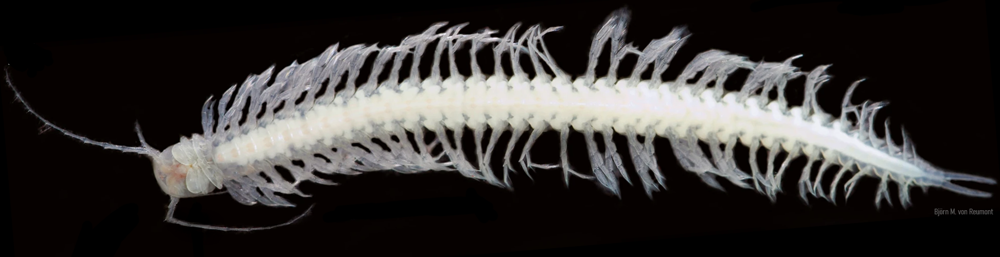
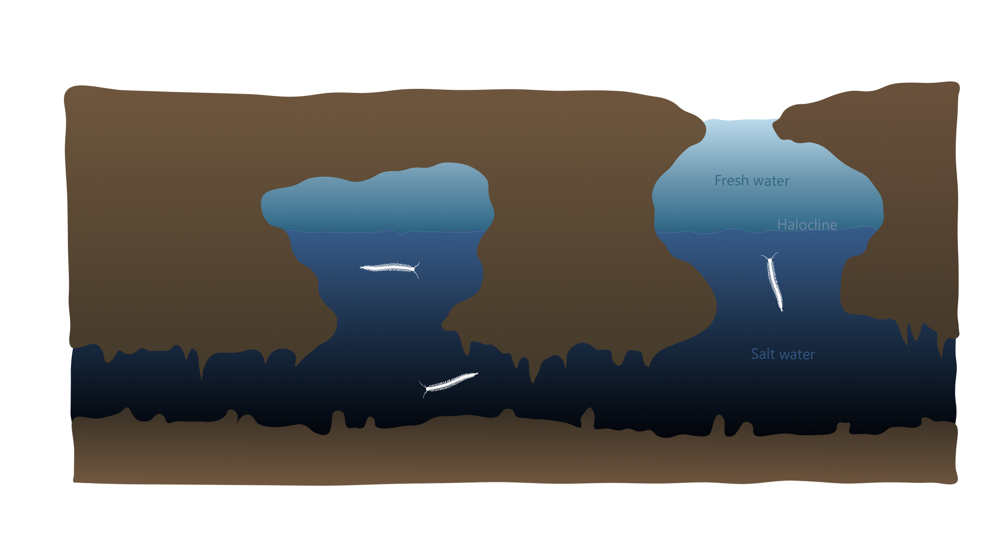
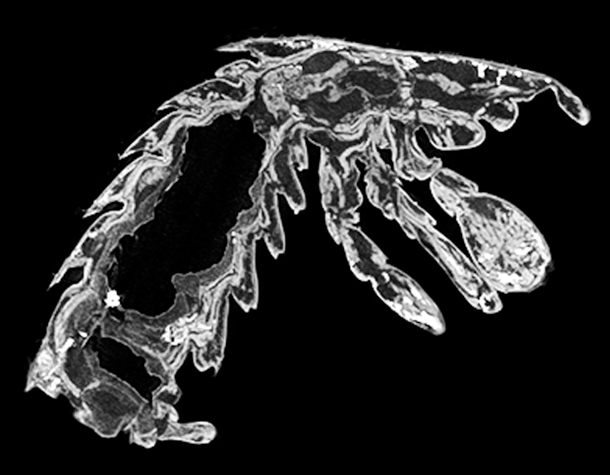

Gut organization in Remipede crustaceans revealed by microtomography

Overview
Remipedes are rare crustaceans that live in underwater cave systems in Mexico, Spain, and Australia. Because of these extreme and isolated environments, their ecology remains largely unknown. In this project, I explored their internal anatomy in 3D, with a focus on the digestive system, to better understand their feeding strategy and ecological role.

Methods
A specimen of Xibalbanus tulumensis was stained with Lugol’s iodine and CT-scanned. Internal organs were segmented and reconstructed in 3D using ImageJ and Dragonfly, then refined in Blender to produce detailed models and visualizations.
Example of shell bed virtual slice ⬏

Results
This project provides the first complete 3D reconstruction of the digestive system in a remipede. The results suggest that remipedes are specialized carnivores that use venom to hunt and digest their prey, making them the only known venomous crustaceans. Their gut shows clear adaptations to this lifestyle, with specialized musculature and enlarged regions for nutrient storage, an important advantage in environments with low population density.
⬐ Results were presented as a poster at a student scientific conference (click on it to view)


The beautiful Pinhay Bay